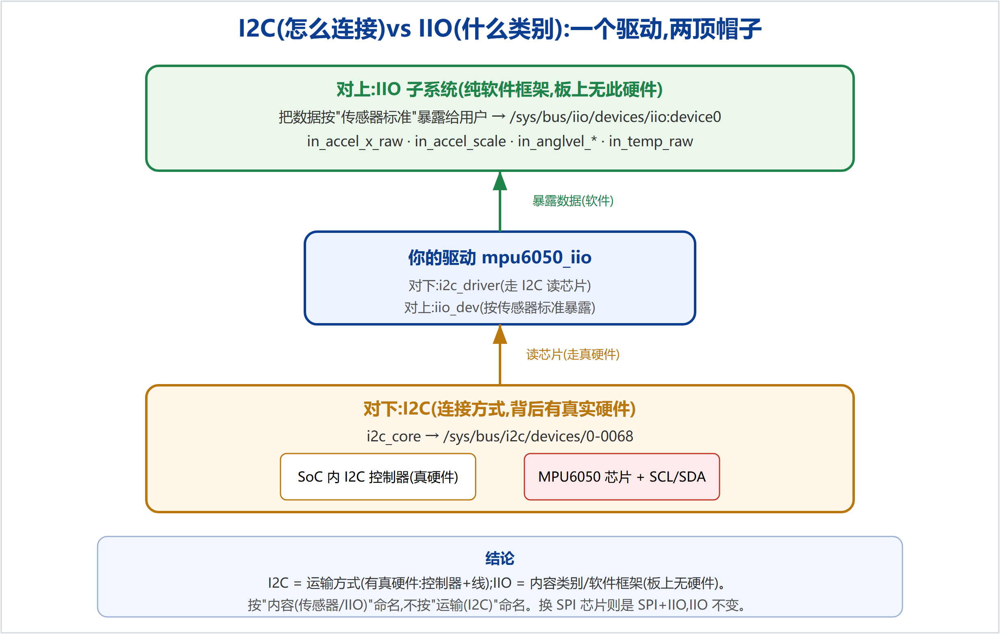

[root@ATK-stm32mp1]:/$ insmod /mpu6050_iio.ko mpu6050_iio: loading out-of-tree module taints kernel. mpu6050_iio 0-0068: MPU-6050 detected! # 真芯片 WHO_AM_I 读对 mpu6050_iio 0-0068: registered as an IIO device $ cat in_accel_x_raw in_accel_y_raw in_accel_z_raw 992 16768 -1216 # Y 轴朝上:16768 x 0.000598550 ≈ 10.0 m/s² ≈ 1g(重力!) $ cat in_accel_x_raw in_accel_y_raw in_accel_z_raw (翻转板子后) -8928 7324 9720 # 数值完全变化 = 真实加速度随姿态改变 $ cat in_accel_scale 0.000598550
in_accel_{x,y,z}_raw + in_accel_scale # 加速度 → m/s²
in_anglvel_{x,y,z}_raw + in_anglvel_scale # 角速度 → rad/s(旋转时变)
in_temp_raw + in_temp_scale + in_temp_offset # 温度 → (raw+12420)/340 ℃
| 步骤 | 做法 |
|---|---|
| 1. 交叉编译 | make KERNELDIR=.../linux-5.4.31(内核 Makefile 已设 ARCH=arm、CROSS_COMPILE=arm-none-linux-gnueabihf-)→ 得 ARM .ko(file 验证含 ARM) |
| 2. 避免冲突 | 驱动 of_match 改独有 compatible = "alientek,mpu6050",避开主线 inv_mpu6050 |
| 3. 设备树 | 在 stm32mp157d-atk.dts 末尾加 &i2c4 override:打开 I2C4(PZ4/PZ5)+ 挂 mpu6050@68 节点 → make stm32mp157d-atk.dtb → 拷到 tftpboot |
| 4. 接线 | MPU6050 SCL→JP1-25(I2C4_SCL/PZ4),SDA→JP1-26(I2C4_SDA/PZ5),VCC→3V3,GND→GND |
| 5. 部署 | ARM .ko 拷到 NFS 根文件系统(.../nfs/rootfs/) |
| 6. 加载验证 | 板子重启(载新 dtb)→ insmod → dmesg 见 detected → cat 读真实数据 |
设备树节点:
&i2c4 {
pinctrl-names = "default", "sleep";
pinctrl-0 = <&i2c4_pins_a>; /* PZ4=SCL, PZ5=SDA, AF6 */
pinctrl-1 = <&i2c4_pins_sleep_a>;
clock-frequency = <100000>;
status = "okay"; /* 打开 I2C4(默认 disabled) */
mpu6050@68 {
compatible = "alientek,mpu6050"; /* 与驱动 of_match 对上 */
reg = <0x68>;
};
};
设备挂在 I2C 总线,却叫 IIO 驱动——因为 I2C 和 IIO 是两个不同维度,一个驱动同时兼两职(图 1)。

| I2C | IIO | |
|---|---|---|
| 回答什么 | 怎么和芯片通信(连接方式) | 这是哪类设备、怎么把数据给用户(软件框架) |
| 在驱动里 | i2c_driver + regmap 读芯片(对下) | iio_dev + 通道 + read_raw,暴露 /sys/bus/iio(对上) |
| 是硬件吗 | 是(SoC 内 I2C 控制器 + SCL/SDA 线) | 不是,纯软件框架(drivers/iio/*.c) |
/sys/bus/i2c/devices/0-0068(连接)与 /sys/bus/iio/devices/iio:device0(传感器身份)。/sys/bus/iio/ 是软件虚拟目录。整条链路全部打通并经真实硬件验证:从零手写驱动 → 理解每一层 → 交叉编译 ARM → 改设备树 → 部署上板 → 读出真实传感器数据。面试可据实陈述:
"我从零写了一个 MPU-6050 的 Linux IIO 驱动,交叉编译部署到 STM32MP157,自己改设备树把它挂到 I2C4,在真板子上读出了随姿态变化的真实加速度/角速度/温度。"
后续可延伸:DRDY 中断 + 触发缓冲(生产级数据流)、采样率配置、对照主线 inv_mpu6050。
学习版代码examples/learning-driver/(已在真 STM32MP157 验证);完整从零教程见docs/learning/。仓库:github.com/fyy0619-cell/xiangmu